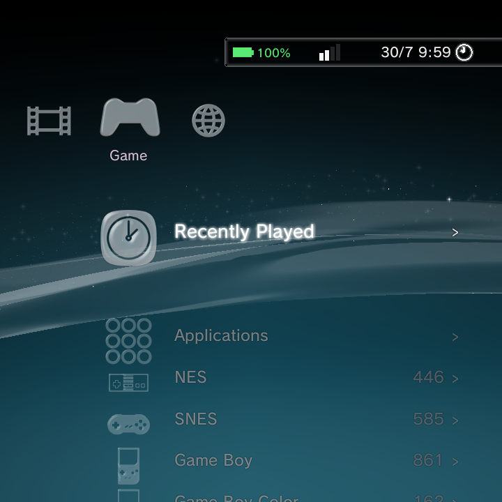
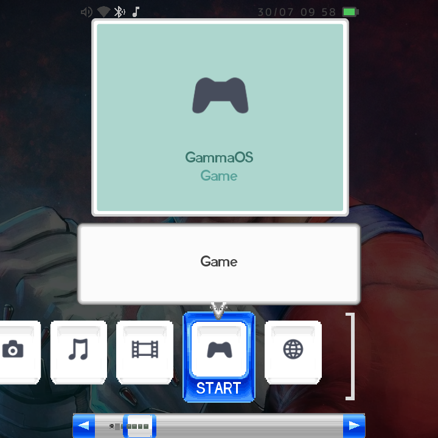
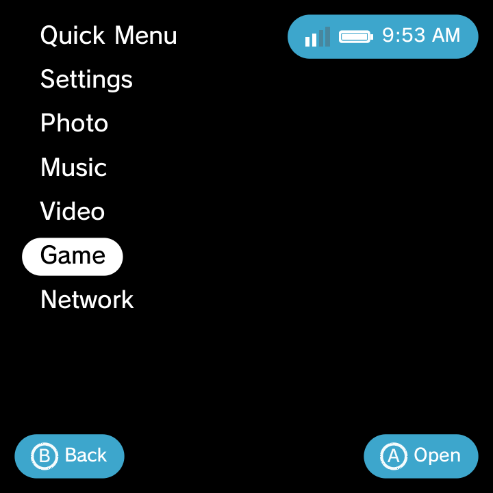
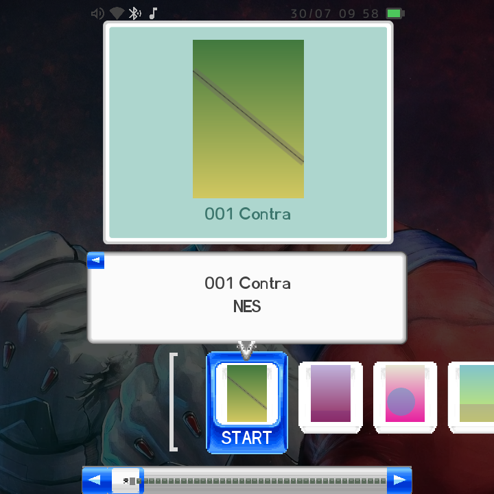
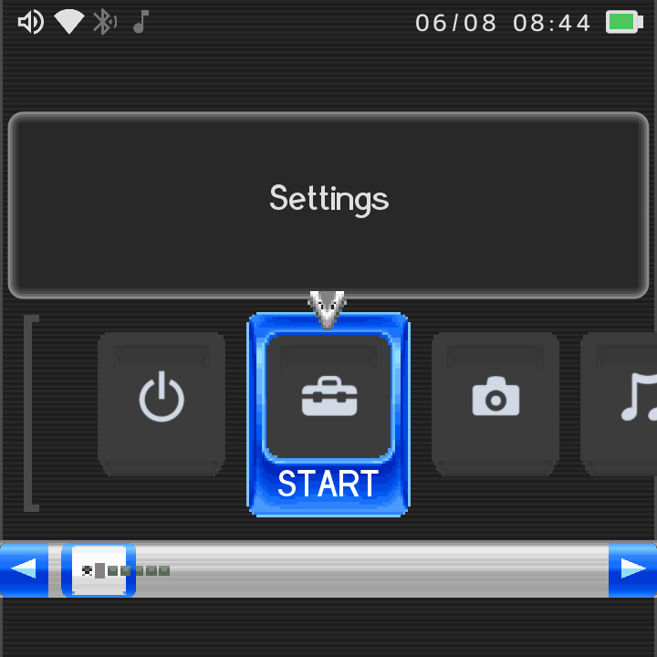
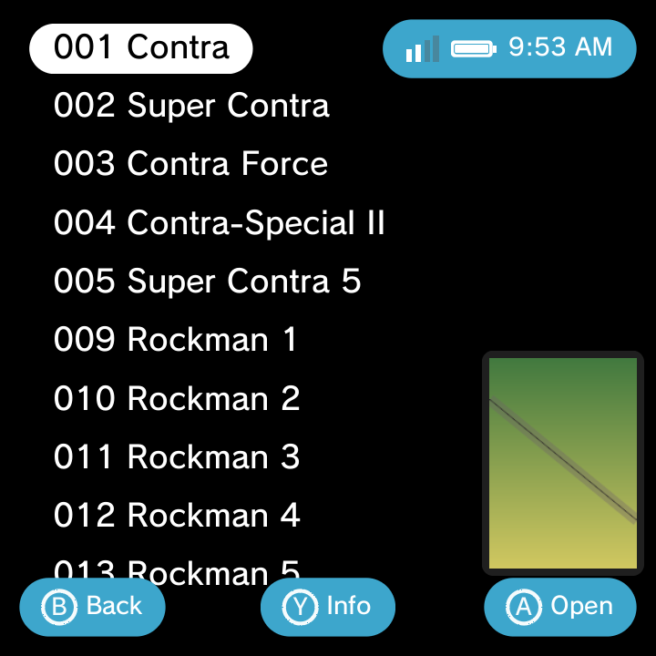
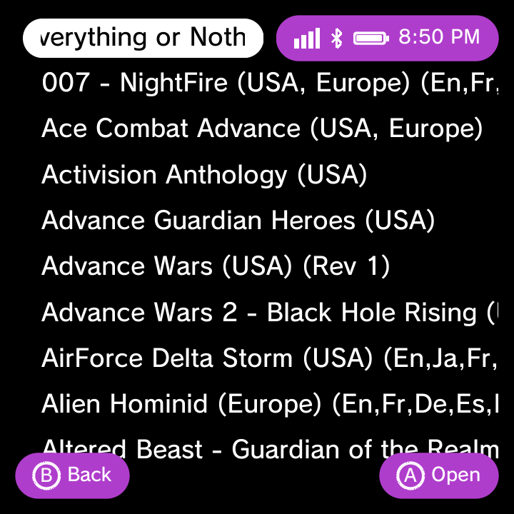

GammaOS Nano gives you three complete home themes in one interface. Pick the look you love and everything (games, media, apps, Settings) reshapes to match.

PlayStation 3 style

Nintendo DSi style

Minimal list style
All three themes launch the same games, play the same media, and share the same deep Settings. They just wear it differently.
GammaOS XMB (PlayStation 3 style)
This is the default look. A horizontal category bar runs across the screen, and the item list for the active category drops down vertically from it. Behind everything flows the continuous PS3 "wave" background, with glass icons and firmware-style animations. It adapts to any screen size or orientation automatically. You can see the wave and the sliding category rail in the clip above.
XMB has a few looks that are all its own, under Settings > Theme Settings:
| Option | Choices | Default |
|---|---|---|
| XMB Wave | On / Off | On (turns off automatically when you set a custom wallpaper) |
| Background | Original / Classic / Wallpaper | Original |
| Font | Original / Rounded / Pop | Original |
| Day/Night | Auto (by time of day) / Day / Morning / Dusk / Evening / Night | Night |
Day/Night changes the lighting mood of the whole home. Leave it on Auto and it follows the time of day for you.
XMB on portrait and small panels
On small portrait panels XMB scales itself up so icons and text stay readable, and the User Guide uses the full screen width.
On portrait panels the XMB option side panel marquee-scrolls the focused row instead of truncating a long label, so you can always read the whole option name.
DSi Menu (Nintendo DSi style)
A carousel of glossy tiles glides across a light field with a soft scanline background. Tiles spring into place as the menu opens, and you can fling or scrub the carousel with a touch panel, snapping neatly to each slot.
Drill into a category (like Game) and you get a familiar list with boxart, the same as the other themes.

DSi has one option of its own on single-panel devices: a Single-Screen / Stacked layout choice. You can keep the carousel-only view (the default), or switch to a stacked layout with the status bar on top. Dual-screen devices always use both physical panels, so this choice is for single-panel handhelds.
DSi Dark Theme
The DSi theme now has a dark variant. With the DSi theme active, turn on Dark Theme in Theme Settings and the whole DSi look flips live: the carousel, top screen, information page, dialogs, status bar and tile cards all switch to light text and icons on a dark field. It is a shared palette, so everything recolours together in one step, no restart needed.

DSi accent colour
The DSi theme now follows the Colour accent setting like the other themes. Your accent recolours the glossy list buttons, the scrollbar, the carousel selection frame, the back button, the scroll arrows and the dialog borders, so the DSi chrome matches whichever accent you picked.
Minima (NextUI style)
A clean, minimal vertical text list on a black canvas. The selected row is a bright white rounded capsule with inverted text, and there is a small accent status pill plus a bottom button-hint bar so you always know your controls. Scrolling is a smooth exponential glide. The main list keeps things text-only with no icons.
Even in this stripped-back theme, your games still show their boxart once you drill into a system.

Minima adds two of its own options: a Background Colour (a solid colour instead of black, though a photo or video wallpaper overrides it), and an opt-in for the XMB wave (off by default in Minima, since the flat look is the point). The wave choice persists across restarts, so once you turn it on it stays on.
Minima details
- Long names scroll by default. A long game or app name keeps its normal size and scrolls across the focused row instead of shrinking to fit. If you prefer the old behaviour, pick Shrink to Fit in Theme Settings.

- Portrait scaling. On portrait panels Minima scales by the short edge, so text and item density track the narrow dimension and stay readable.
- Button-legend circles at large fonts. The A/B/Y glyph badges in the hint bar size correctly at large font settings, with the letters fitting neatly inside their rings.
Switching themes
Changing your whole home is one setting away.
- Open Settings > Theme Settings.
- Choose Home Theme.
- Pick GammaOS XMB, DSi Menu, or Minima.
Applying a new theme restarts the home so the new look loads cleanly. Give it a second and you are in the new interface.
The same menus simply look different in each theme. A Settings screen in Minima (see min_settings.png) and an Options menu in DSi (see dsi_optmenu.png) show the exact same choices as their XMB counterparts, just dressed to match the theme you chose.
Accent Colour (all three themes)
Under Settings > Theme Settings > Colour you get 21 accent choices that apply to whichever theme you are using:
Original (each theme's signature colour: XMB uses a per-month hue, Minima a berry tone, DSi its azure), plus Yellow, Green, Pink, Dark Green, Light Purple, Teal, Dark Blue, Magenta, Orange, Brown, Red, Black, White, Gray, Blue, Cyan, Lime, Gold, Violet, and Crimson.
The accent shows up differently in each theme. On XMB it tints the wave and menu accents, on Minima it colours the capsule and hint bar, and on DSi it hue-rotates the chrome. One colour, three personalities.
Wallpapers
You can replace the default background with your own picture or a looping video, all from Settings > Theme Settings.
| Option | What it does |
|---|---|
| Wallpaper Image | Pick a photo for the home background, using the photo grid picker |
| Bottom Wallpaper | A separate wallpaper for the bottom screen (dual-screen devices only) |
| Video Wallpaper | Pick a looping video for the top-screen background |
| Clear Wallpaper | Remove your custom wallpaper and restore the wave |
| Wallpaper Dimming | Darken a bright wallpaper so icons and text stay readable (default 25%) |
| XMB Wave | On / Off; turns off automatically when a wallpaper is set, then is honored exactly as you leave it |
Supported wallpaper image types: jpg, png, webp, bmp, gif, heic. Supported video types: mp4, mkv, webm, mov, 3gp, avi, ts, mpg.
If your wallpaper makes text hard to read, nudge Wallpaper Dimming up until icons and labels pop again.
Clocks follow your Time and Date Format
The DSi top-screen clock and the Minima status-pill clock both follow your Time Format (12 or 24 hour), and the DSi date follows your Date Format. Set these under Settings and every theme's clock matches.
Keep exploring
For a tour of everything added since version 1.4, see What's New since 1.4.
See the full list of every option in the Settings reference, and check the GammaOS Toolbox for extra display and system tweaks that pair well with your chosen theme.